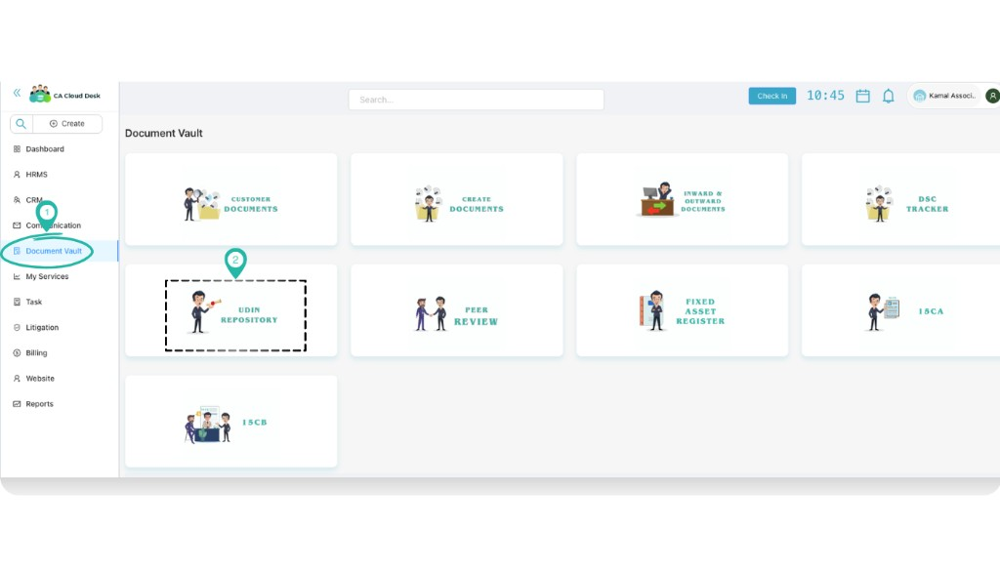
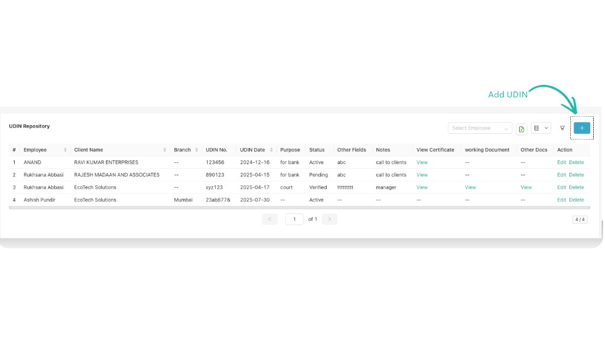
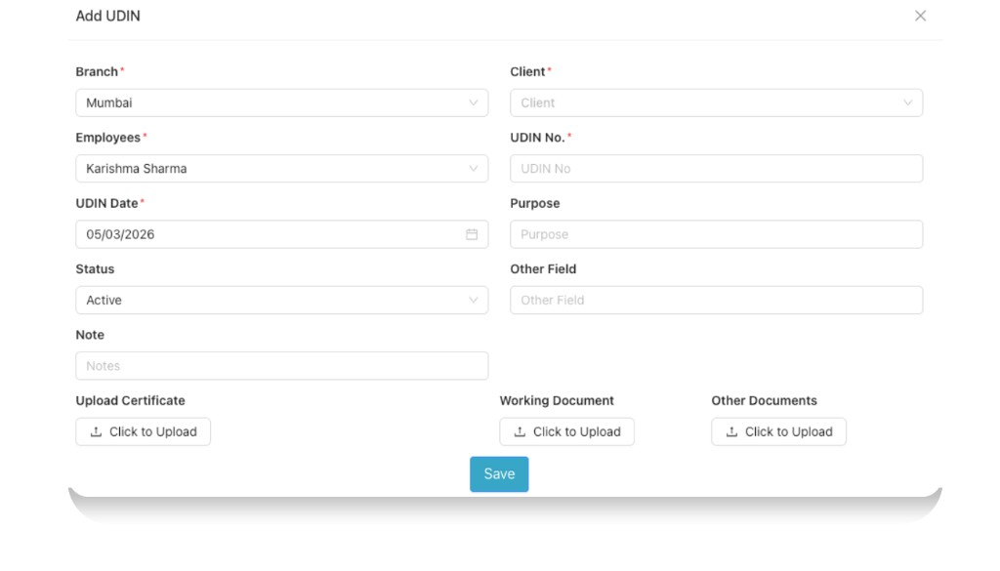
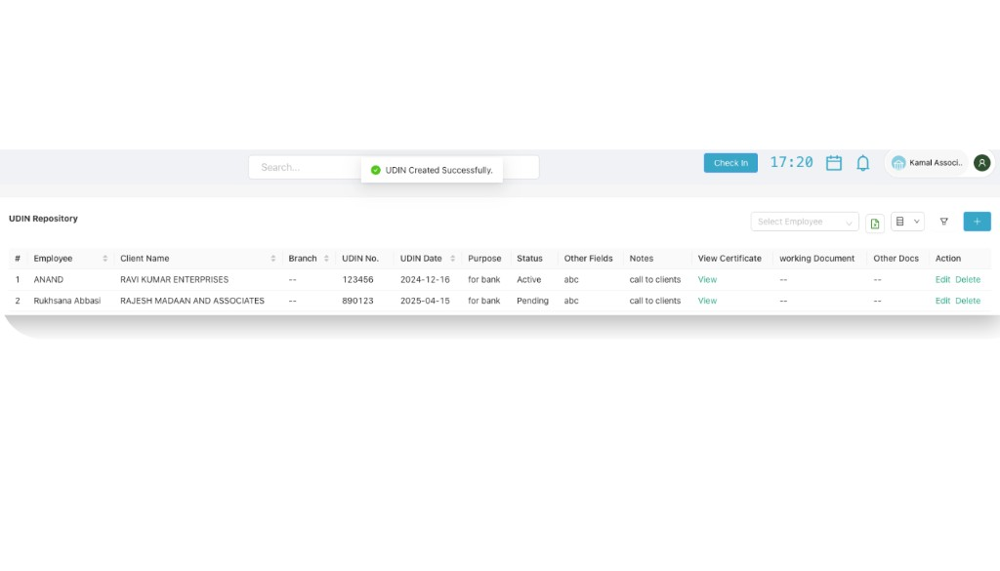

UDIN Repository
Use the UDIN Repository in Document Vault to keep a proper record of all Unique Document Identification Numbers (UDINs) generated for your certificates, reports and other documents. This helps you quickly find any UDIN, see its status and keep supporting documents at one place.
Overview
Every time you generate a UDIN on the ICAI portal, it is important to store its details along with the related certificate or report. The UDIN Repository gives you a simple table where you can see all UDINs issued by your firm and filter them by employee, client, branch and status.
From this screen you can:
- View all UDINs created by your team members in one place.
- Search UDINs by client, employee, branch or status.
- Open attached certificates, working documents and other documents linked to the UDIN.
- Add new UDINs as soon as they are generated so that your register is always updated.
Login and open UDIN Repository
- Login to your CA Cloud Desk account.
- From the left panel on the dashboard, click Document Vault.
- On the Document Vault screen, click the UDIN Repository card.

From the main dashboard, choose Document Vault from the left side panel.

Inside Document Vault, click the UDIN Repository card to open the module.
Understand the UDIN Repository screen
When the UDIN Repository opens you will see a table listing all UDINs already recorded. Each row shows the employee, client name, branch, UDIN number, UDIN date, purpose, status, notes and links to the attached documents.

UDIN Repository list – existing UDINs with employee, client, branch, status and document links.
On the top-right you will find:
- A Search box to quickly search by client name or UDIN.
- An Employee drop-down to filter UDINs employee-wise.
- The Plus (+) icon to Add UDIN.
Add a new UDIN
Whenever you generate a new UDIN, add it immediately to keep your register updated.
- On the UDIN Repository screen, click the Plus (+) icon on the top-right to open the Add UDIN form.
-
Fill all the details:
- Branch – Select the branch from which this UDIN is issued (for example, Mumbai).
- Client – Choose the client for whom the certificate / report is issued.
- Employees – Select the employee responsible for this UDIN (for example, the signing partner or team member).
- UDIN No. – Enter the UDIN exactly as generated on the ICAI portal.
- UDIN Date – Enter the UDIN date. For example, 05/03/2026.
- Purpose – Mention the purpose such as “For bank”, “For income tax”, “For audit report”, etc.
- Status – Set the status (for example, Active, Pending, etc. as configured in your firm).
- Other Field – Any extra internal information you want to capture (for example, reference number or department).
- Note – Write any short note like “Call to client”, “For court submission”, “Manager approval pending”, etc.
- Upload Certificate – Attach the signed certificate or report for which UDIN is generated.
- Working Document – Upload any working paper, computation or backup working related to this UDIN.
- Other Documents – Attach any other supporting documents or correspondence if needed.
- After filling all the mandatory fields, click Save to add the UDIN to the repository.

Add UDIN form – capture branch, client, UDIN number, purpose, status and supporting documents.
After saving the UDIN
Once you click Save, CA Cloud Desk confirms that the UDIN is created and adds it to the list.

A confirmation message “UDIN Created Successfully” appears and the new UDIN shows in the list.
You can now:
- See the UDIN in the table along with other entries.
- Use Edit if you need to update any detail later.
- Open View Certificate, Working Document or Other Docs to check the attached files.